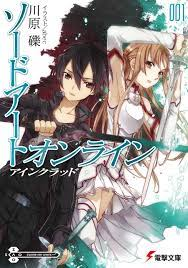

西暦2022年、1000人のユーザーによるベータテストを経て世界初のVRMMORPG「ソードアート・オンライン」（SAO）の正式サービスが開始され、約1万人のユーザーは完全なる仮想空間を謳歌していた。 しかし、ゲームマスターにして開発者である天才量子物理学者の茅場晶彦がプレイヤーたちの前に現れ、自発的ログアウトは不可能であること、舞台「浮遊城アインクラッド」の最上部第100層のボスを倒してクリアすることだけが脱出する唯一の方法であること、そして死亡した場合には現実世界のプレイヤー自身が本当に死亡するということを宣言した。プレイヤーの1人である少年キリトはこの絶望的な狂気のデスゲームで生き残るべく戦うことを決意し、始まりの街から旅立ってゆく。 しかし、後に「SAO事件」と称されるこのデスゲームは、仮想世界をめぐるさまざまな事件の幕開けにすぎなかった。
本作全編を通しての主人公。SAO事件を劇的な早期解決へと導いた「黒の剣士」。 SAO事件後も、その残滓が引き起こした様々な事件に巻き込まれていく。
本作のメインヒロイン。SAO事件における紆余曲折の末にキリトと結ばれて相思相愛の関係となり、心身ともにキリトに寄り添い彼を支えていく。 SAOでは最強のギルド「血盟騎士団」の副団長であり「閃光」と渾名されていたが、事件以前はゲームとは無縁な良家の令嬢であった。
マザーズ・ロザリオ編のヒロイン。ALOにおいて「絶剣（ぜっけん）」と呼ばれ圧倒的な戦闘力を誇るプレイヤー。
ギルド「スリーピング・ナイツ」のリーダー。ALOでの辻デュエルでアスナと出会いその強さを認め、ボス攻略戦の助っ人を依頼した。
↓リンク
キャラ紹介(ユウキのみ)